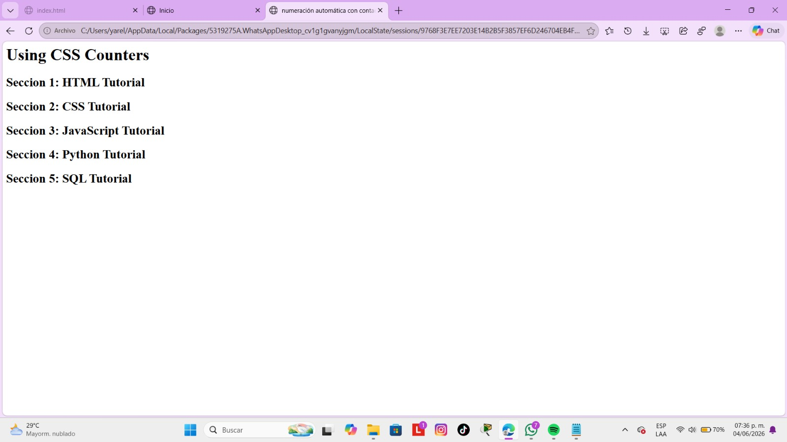
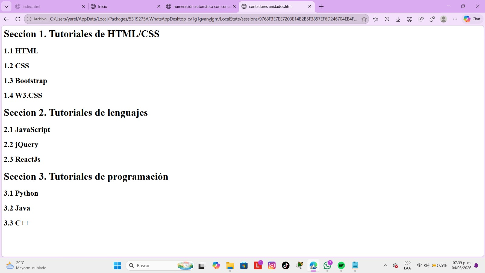
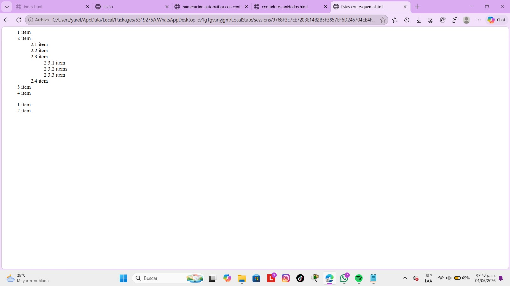

counter-reset, counter-increment, content Permiten crear numeraciones automáticas mediante contadores CSS sin necesidad de escribir los números manualmente.
Volver al inicio
@keyframes, animation transition Permiten animar números o contadores para que cambien de valor de forma visual y dinámica.
Volver al inicio
ul, ol, li, list-style-type, list-style-position, list-style-image Permiten personalizar la apariencia de listas utilizando diferentes estilos de numeración, viñetas o imágenes.
Volver al inicio